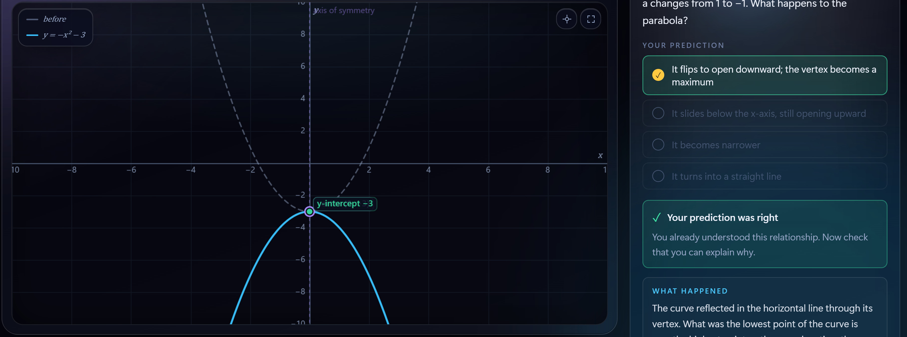
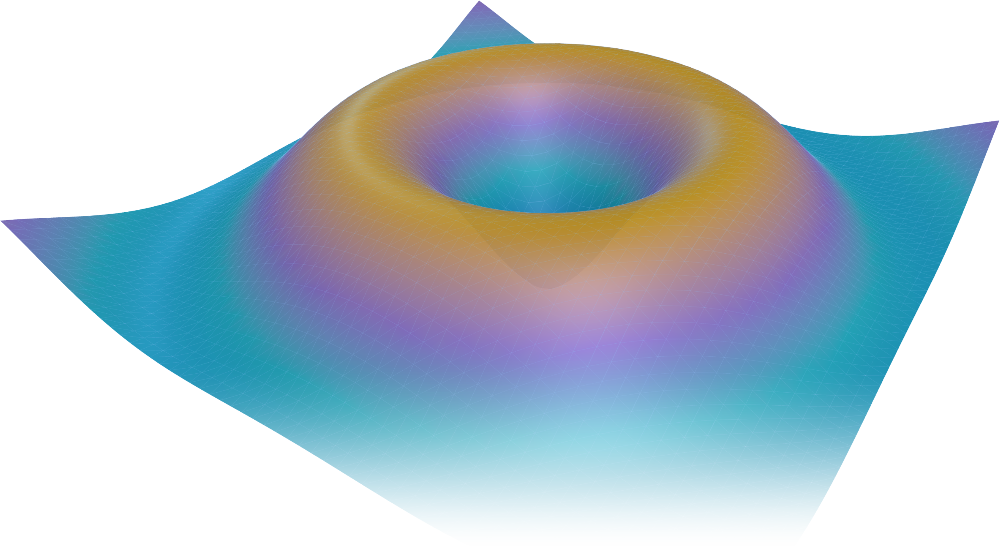
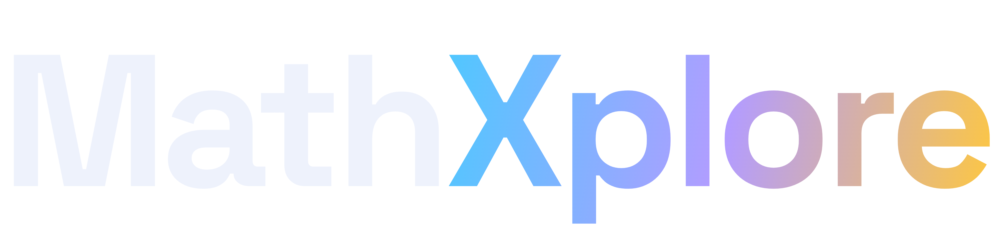
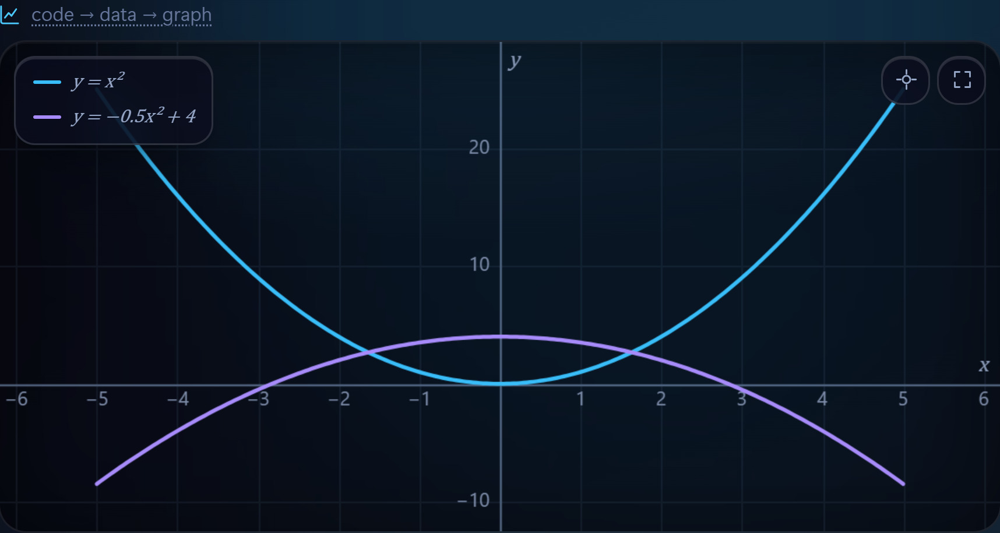
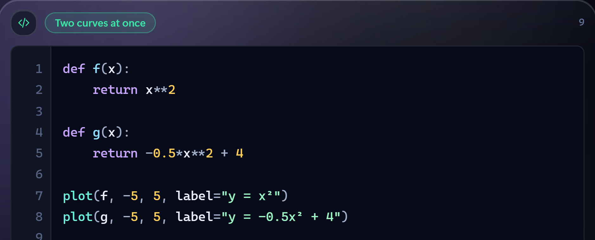
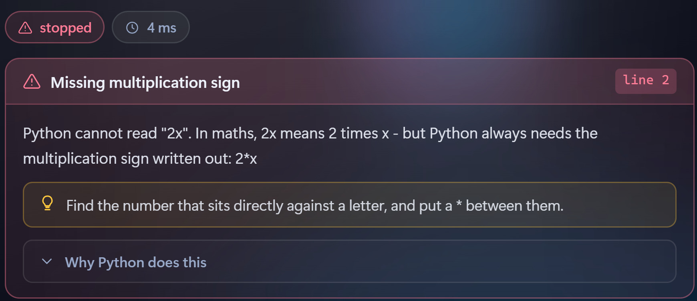
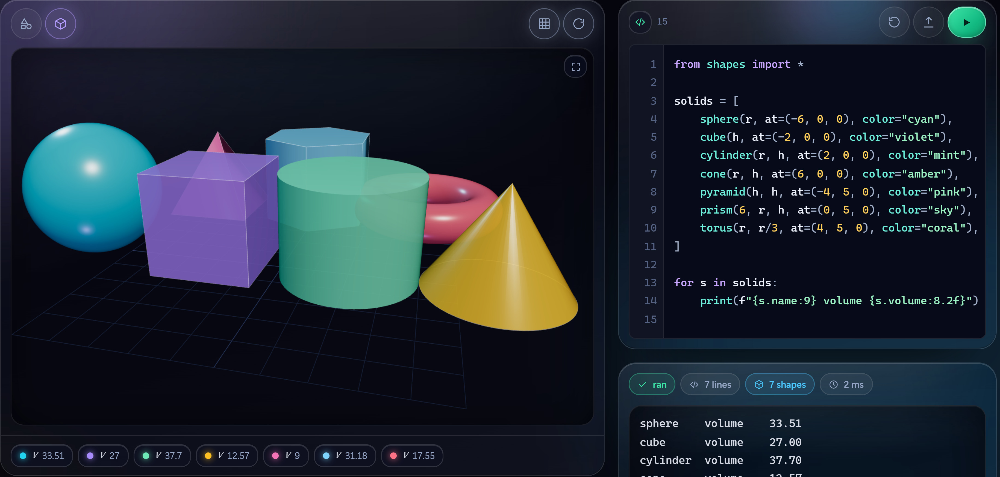
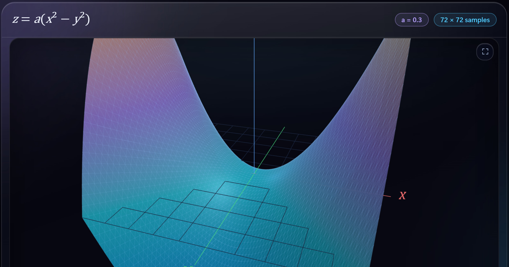
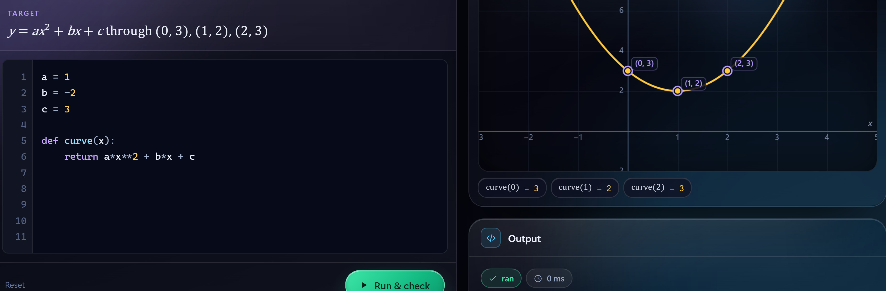

What If? — predict, then see
Students commit to a prediction before anything moves. Then the curve animates against a ghost of the old one, and the lab explains why it changed.


A browser-based lab where students see a function, change it with a slider, predict what happens next — and write the Python that draws it. Mathematics and programming, finally taught together.
Ask us for the keyboard.
The parabola, its vertex and roots move — and the Python beside it rewrites itself.
a, b, c = -1, 0, -3"What if a goes from 1 to −1?" Commit to an answer, then watch the curve move against a ghost of the old one.
ghost → revealType y = 2x + 3. Instead of "invalid syntax", the lab explains the maths: 2x means 2 × x, and Python needs 2*x.
Airplane mode on — everything keeps working. No account, no download, nothing sent anywhere.
offline — still runningLoops learnt on arbitrary examples; graphs never linked to code.
A calculator answers only what you already knew how to ask.
SyntaxError: invalid syntax is a dead end for a beginner.
Every Python concept arrives because a piece of mathematics needs it — and every picture on screen is also a program.
Every image is captured from the working system — nothing is mocked up.

Students commit to a prediction before anything moves. Then the curve animates against a ghost of the old one, and the lab explains why it changed.


Write Python, press Run, get mathematics back: code → data → graph, drawn on as you watch.

Type y = 2x + 3 and the lab explains that maths allows 2x but Python needs 2*x — with a hint that stops short of the answer.

from shapes import * — polygons, solids and turtle graphics. Every shape reports its area, perimeter and volume live.

Rotate z = a(x2 − y2), then slice it: every cross-section is an ordinary 2D curve, drawn alongside.

Answers are run, not text-matched, so any correct solution passes. The student's function is drawn over the goal.
| Graphing apps | Online Python editors | MathXplore | |
|---|---|---|---|
| Change maths live, in 2D and 3D | ● | ○ | ● |
| Python tied to the maths on screen | ◐ | ◐ | ● |
| Predict-then-reveal, built in | ◐ | ○ | ● |
| Errors explained in maths terms | — | ○ | ● |
| Offline · no account · no data sent | ◐ | ○ | ● |
Understanding over memorising: every change is predicted, seen and explained.
Ready demonstrations, plus a class view built from students' real exported records.
Runs from one laptop or a school intranet — no internet needed after setup.
No effect claimed yet — anonymous on-device logs are ready for a pre/post-test study.
eval, no network, no file accessAsk us for the keyboard, or scan to open the lab.
your.email@domain